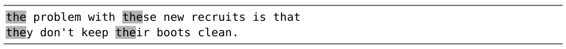

。
。技巧76界定单词的边界
在我们定义模式时，如果能指定单词从哪里开始到哪里结束的话，将会非常有用。Vim的单词定界符可以帮助我们做到这一点。
有些单词，尤其是短词，常常出现在其他单词内部。比如，“the”就会在“these”、“they”、“their”等单词中出现。因此，如果我们在下面这段文本中执行 /the<CR>进行查找的话，会发现实际匹配的内容比我们预想得要多。

如果我们想明确匹配“the”这个完整的单词而不是其他词的组成部分，可以使用单词定界符。在very magic搜索模式下，用 <与>符号表示单词定界符。因此，如果我们将查找命令改为 /\v<the><CR>的话，文中就只会出现一处匹配了。
这些就是所谓的零宽度元字符，它们本身不匹配任何字符，仅表示单词与围绕此单词的空白字符（或标点符号）之间的边界。
我们可以将字符类\w、\W与匹配定界符\zs、\ze组合在一起，来模拟 <与>（我们将在技巧77中结识这种用法）。\w匹配单词类字符，包括字母、数字以及符号“_”，而\W则用来匹配除单词类字符以外的其他字符。
使用圆括号，但不捕获其内容
有时我们只想使用圆括号的分组功能，但并不关心所捕获的子匹配。例如，可以使用以下模式来匹配我名字的两种形式：
➾/\v(And|D)rew Neil
这一次，我们使用圆括号的目的在于匹配“Andrew”或者“Drew”，但可能并不想捕获位于圆括号内部的“And或D”。我们可以在圆括号前面加上%，指示Vim不要将括号内的内容赋给寄存器\1，就像这样：
➾/\v%(And|D)rew Neil
运行结果与之前相比有区别么？当然，速度比原来快了一点，只是你可能察觉不到。但如果你发现自己经常会用到多组圆括号，这种方法就很有用处了。还以处理我名字的两种形式为例，假设我们想把所有的名和姓替换为姓和名。可以这样做：
➾/\v(%(And|D)rew) (Neil)
➾:%s//\2, \1/g
该查找模式会把“Andrew”或者“Drew”赋给寄存器\1，而把“Neil”赋给寄存器\2。如果我们没有对第二组圆括号使用%()，便会得到无用的文本片段，从而扰乱替换域。
将这些命令合而为一，我们可以用\W\ze\w模拟元字符 <，而用\w\ze\W表示元字符 >。
在very magic搜索模式下，<与>字符可直接被解析为单词定界符，而在magic、nomagic以及very nomagic搜索模式下，则必须要将它们转义。因此，要想在Vim文档中查阅这些选项，我们得在前面附加一个斜杠，即：h /\<。
注意：如果想在very magic搜索模式下匹配尖括号本身的话，必须将其转义。
即使我们还没养成用单词定界符构造查找模式的习惯，但每当我们使用*或者#命令（参见:h *）时就会间接地用到它们。这两条查找命令分别用于正向或反向查找光标下的单词。假设我们刚刚用过这两条命令中的某一个，在查看查找历史（按 /<UP>）时就会发现，上一次的查找模式就被单词定界符围在中间。顺便说一句，g*与g# 这两种变体将执行同样的查找，但不会使用单词定界符。